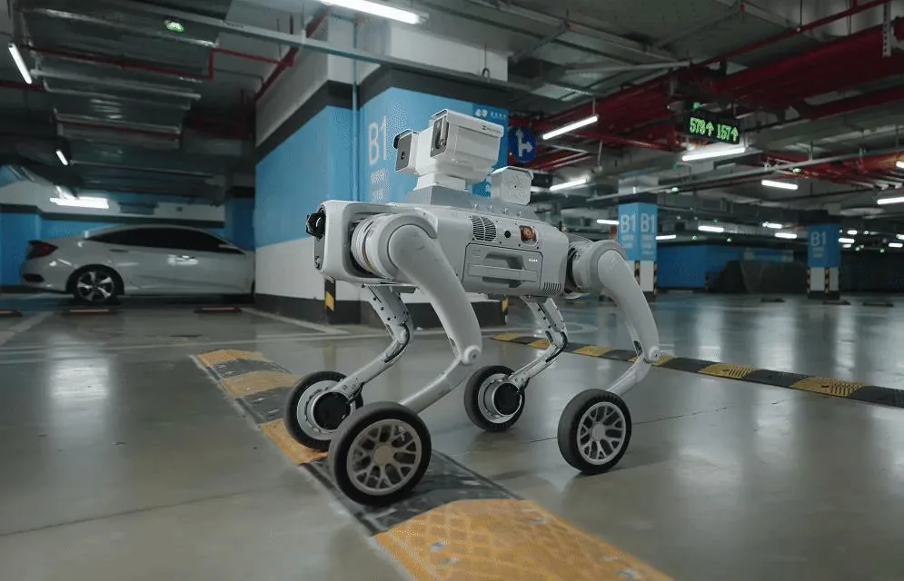

DestacatGuia
Com preparar la teva empresa per a la robòtica humanoide
Claus per avaluar processos, espais i objectius abans d'invertir.
Llegir article
RH·BOTS — Blog
Notícies, casos d'ús i recursos per entendre com els robots humanoides poden integrar-se en empreses reals de manera segura, útil i mesurable.
Coneixement aplicat
Claus per avaluar processos, espais i objectius abans d'invertir.
Llegir articleÚltims articles
Claus per avaluar processos, espais i objectius abans d'invertir.
Llegir més
Retail, indústria, educació i esdeveniments ja estan incorporant aquesta tecnologia.
Llegir més
Superfície, terra, aigua, rutina diària i suport: el que convé mesurar abans de decidir.
Llegir mésNo hi ha articles que coincideixin amb la teva cerca.
Necessites orientació?
Explica'ns el teu cas i el nostre equip t'assessorarà sobre models, aplicacions i propers passos.
Sol·licitar informació